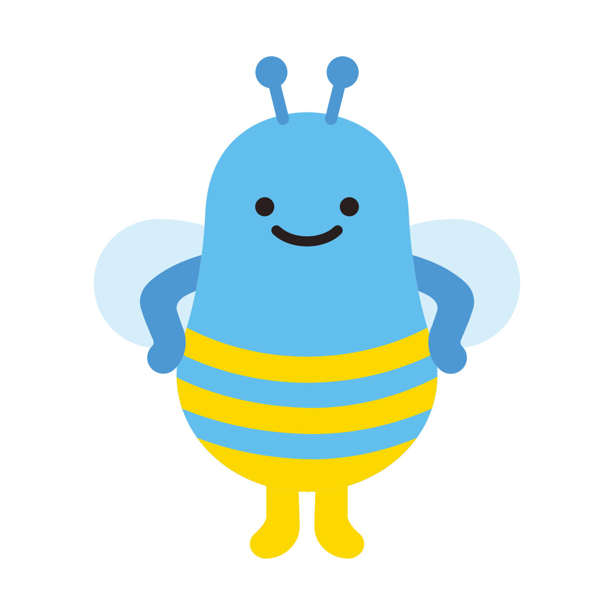
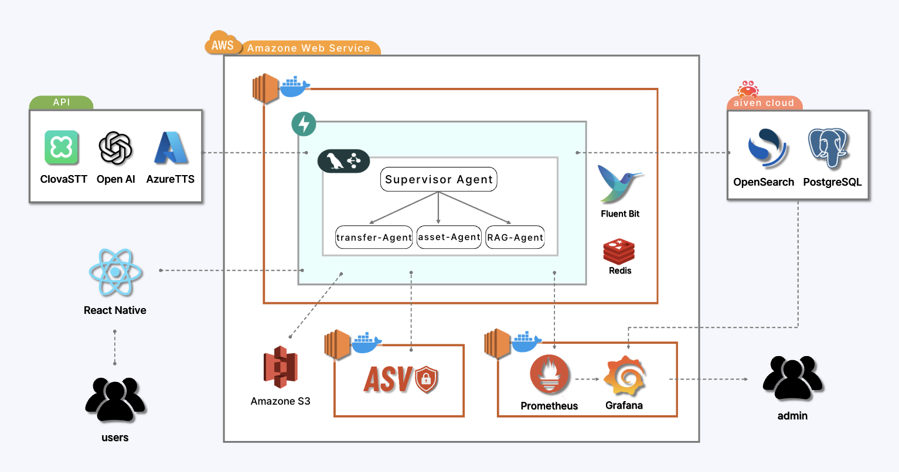
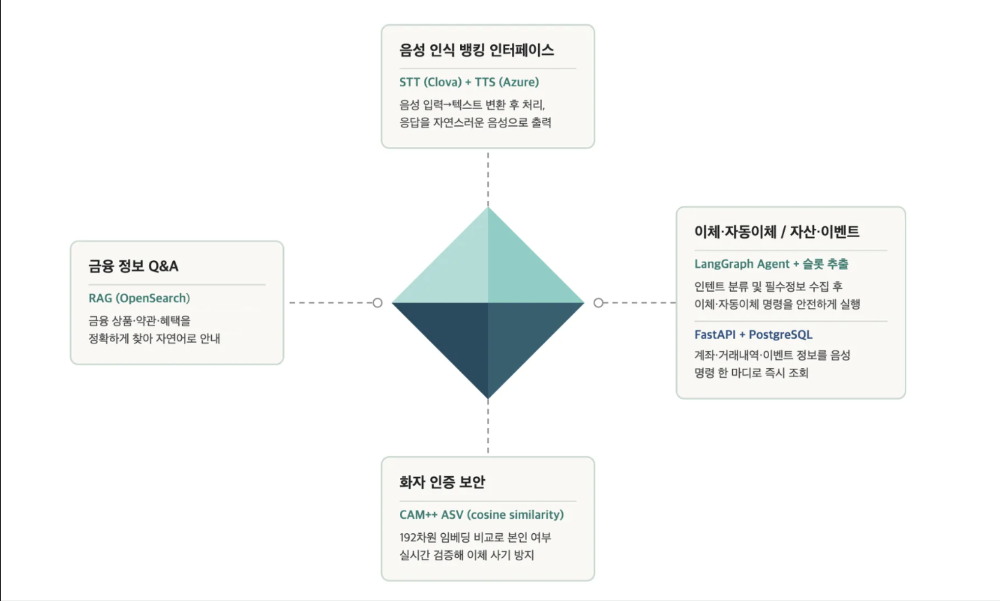
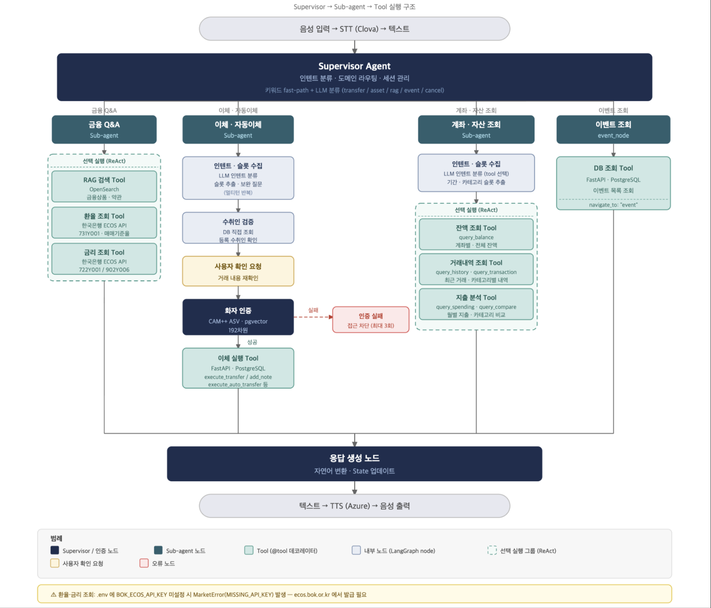
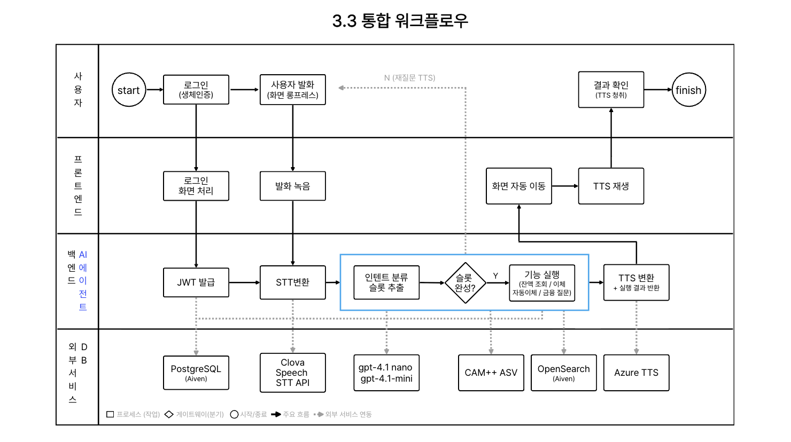
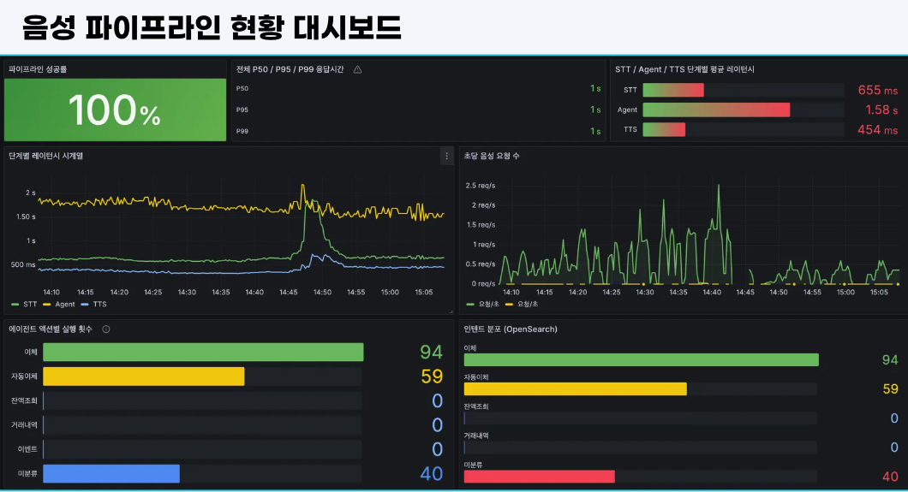
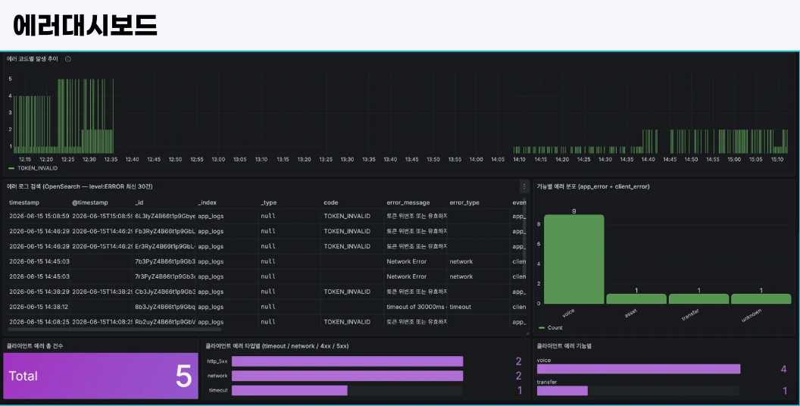
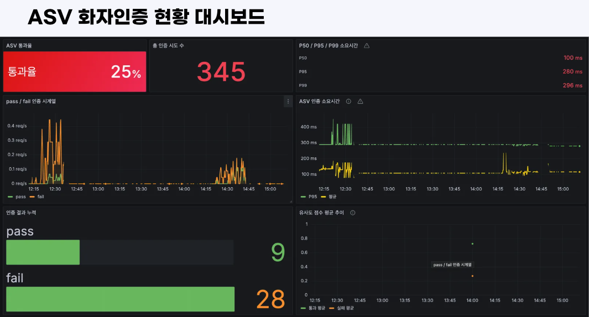

주제 : 시각장애인을 위한 음성 AI 멀티 에이전트 기반 뱅킹 앱
프로젝트 기획 배경
: 시각장애인은 기존 모바일 뱅킹 앱의 복잡한 화면 구성, 작은 버튼, 보안매체 사ㄴ용 등으로 인해 송금이나 계좌 조회 같은 기본적인 금융 거래조차 큰 불편을 겪는다. 스크린리더만으로는 여러 단계로 이어지는 이체 흐름을 온전히 따라가기 어렵고, 특히 본인인증 단계에서는 타인의 도움이 필요한 경우가 잦아 금융 자립성과 보안이 동시에 제약된다. 본 프로젝트는 이러한 문제를 해결하기 위해, 음성만으로 뱅킹 앱의 핵심 기능을 수행할 수 있는 배리어프리 뱅킹 서비스를 구축하였다.
앱 · AI · 백엔드
인프라 · 운영
기획 · 디자인

설명CI/CD 및 배포
GitHub Actions 기반 CI/CD 파이프라인을 통해 코드 변경 시 자동으로 빌드
및 배포가 이루어집니다. Backend(FastAPI)는 Docker 컨테이너로 AWS에
배포됩니다.
데이터 및 보안
PostgreSQL, S3, OpenSearch와 연동하여 금융 데이터 저장 및 검색 기능을
수행합니다. 송금 등 민감 거래 시에는 ASV(화자인증)를 통해 본인 확인을
수행합니다.
모니터링 및 운영
Prometheus, Grafana, Fluent Bit 을 활용한 모니터링 및 로그 관리 환경을
통해 시스템의 안정적인 운영을 지원합니다.


설명
음성 AI 파이프라인
Clova STT·GPT·Azure TTS와 연동하여 음성 입력, AI 처리, 음성 응답까지의
흐름을 구성합니다. LangGraph Supervisor가 transfer·asset·RAG 하위
에이전트로 업무를 분기하는 멀티 에이전트 구조를 적용하였습니다.

 |
 |

backend/app/shared/crypto.pydecrypt()를
통해서만 수행하도록 단일 책임 원칙 적용핵심 코드
def encrypt(plaintext: str | None) -> str | None:
aesgcm = AESGCM(_key())
nonce = os.urandom(_NONCE_BYTES) # 12바이트 랜덤 nonce (매번 새로 생성)
ciphertext = aesgcm.encrypt(nonce, plaintext.encode(), None)
return base64.urlsafe_b64encode(nonce + ciphertext).decode()
# 출력: base64url(nonce_12B + ciphertext + auth_tag_16B)backend/app/shared/agent/supervisor.py핵심 코드
async def _decide_domain(text: str, state: VoiceState) -> str:
if _is_navigation_utterance(text):
return "cancel" # 1순위: 홈 이동 키워드 (세션 무관)
if _is_cancel_utterance(text) and _has_active_session(state):
return "cancel" # 2순위: 취소 + 활성 세션
if _has_active_session(state):
return "transfer" # 3순위: 이체 세션 유지
if state.get("agent_domain") == "asset" and not _is_domain_switch_utterance(text):
return "asset" # 4순위: asset 연속 세션 유지
if is_plain_transfer_start(text):
return "transfer" # 5순위: 이체 키워드 패스트패스
if "이벤트" in _normalize(text):
return "event" # 5순위: 이벤트 키워드
return await _llm_classify_domain(text) # 6순위: gpt-4o-mini LLM 폴백ai/asv/model.pyASV_THRESHOLD 이상이면 동일 화자로 판정.
어떤 상태도 영속하지 않는 Stateless 설계핵심 코드
def extract_embedding(self, audio_bytes: bytes) -> list[float]:
# soundfile 디코딩 → 스테레오→모노 → 16kHz 리샘플링 → 임시 파일 기록
result = self._pipeline([tmp_path], output_emb=True)
return np.array(result["embs"]).flatten().tolist() # 192차원 벡터 반환
@staticmethod
def cosine_similarity(embedding1: list[float], embedding2: list[float]) -> float:
a = np.array(embedding1, dtype=np.float32)
b = np.array(embedding2, dtype=np.float32)
if np.linalg.norm(a) == 0.0 or np.linalg.norm(b) == 0.0:
return 0.0
return float(np.dot(a, b) / (np.linalg.norm(a) * np.linalg.norm(b)))
# >= ASV_THRESHOLD → is_same_speaker=Truebackend/app/shared/voice/stt_service.py핵심 코드
def _validate_audio(audio_bytes: bytes, content_type: str) -> None:
if len(audio_bytes) > MAX_AUDIO_BYTES: # 10 MB 초과
raise STTError(code="VOICE_AUDIO_TOO_LARGE", ...)
mime = content_type.split(";")[0].strip().lower()
if mime not in SUPPORTED_CONTENT_TYPES: # 포맷 미지원
raise STTError(code="VOICE_AUDIO_INVALID_FORMAT", ...)
duration = _get_audio_duration(audio_bytes) # mutagen 메타데이터 파싱
if duration is not None and duration > MAX_AUDIO_DURATION:# 60초 초과
raise STTError(code="VOICE_AUDIO_TOO_LONG", ...)backend/app/shared/voice/tts_service.py핵심 코드
def _build_ssml(text: str, voice_name: str, speed: float) -> str:
rate = _speed_to_rate(speed) # 1.5 → "+50%", 0.8 → "-20%"
return (
"<speak version='1.0' xml:lang='ko-KR'>"
f"<voice name='{voice_name}'>"
f"<prosody rate='{rate}'>{text}</prosody>"
"</voice></speak>"
)
def _speed_to_rate(speed: float) -> str:
percentage = round((speed - 1.0) * 100)
return f"+{percentage}%" if percentage >= 0 else f"{percentage}%"backend/app/features/transfer/service.py핵심 코드
# 1단계: 앱 레벨 — 키 중복 조회
existing = db.query(Transaction).filter(
Transaction.idempotency_key == idempotency_key
).first()
if existing and existing.status == "completed":
return _build_receipt(existing) # 출금 없이 기존 영수증 재반환
# 2단계: DB 레벨 — pending INSERT 후 UNIQUE 위반 즉시 감지 (동시 요청 최후 방어선)
tx = Transaction(..., status="pending", idempotency_key=idempotency_key)
db.add(tx)
db.flush() # IntegrityError → 409 반환
# 3단계: 비관적 락 — 잔액 이중 차감 방지
locked = db.query(Account).filter(
Account.account_id == from_account.account_id
).with_for_update().first()
locked.balance -= amount
tx.status = "completed"
db.commit()backend/app/shared/agent/state.py핵심 코드
class VoiceState(TypedDict):
messages: Annotated[list, add_messages] # 대화 이력 자동 누적 (add_messages 리듀서)
pending_action: str | None # "transfer" | "auto_transfer"
collected_slots: dict # {"recipient": "엄마", "amount": 100000}
awaiting_confirmation: bool # "네/아니오" 확인 대기
awaiting_asv_audio: bool # 다음 오디오 → ASV EC2 서버 라우팅
asv_retry_count: int # 실패 3회 초과 시 pending_action 취소
execution_ready: bool # 확인 완료 → execute_node 즉시 실행
last_tx_id: str | None # 이체 직후 메모 제안용 tx_id 보관
awaiting_memo_decision: bool # 이체 후 메모 제안 응답 대기